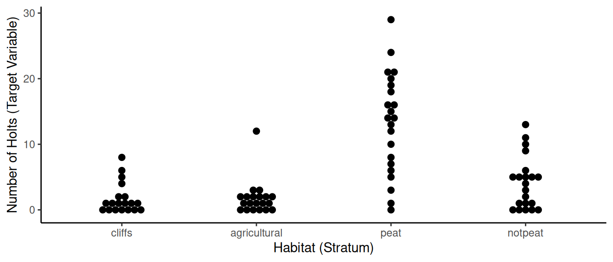

You can also download a PDF copy of this lecture.
In this lecture I will demonstrate how to implement some of the methods we have discussed using the survey package for R. To try this yourself you will need to install R. It is highly recommended that you use the RStudio integrated development environment (IDE) when using R. Note that both of these are free and available for a variety of operating systems.
We will be using the survey package and a data set
included with the SDaA package. You can install these
packages using the install.packages command.
install.packages("survey")
install.packages("SDaA")Note that install.packages only needs to be done once on
a given installation of R. To access the contents of these packages we
need to use the library command each time we start a R
session.
library(survey)
library(SDaA)We will use the data set otters from the
SDaA package for a few demonstrations. We can see the
first few rows of this data set using head.
head(otters) section habitat holts
1 1 4 6
2 3 2 0
3 4 1 8
4 8 1 0
5 11 1 0
6 19 2 0These data were collected using stratified random sampling, where the strata are four habitat types (cliff, agricultural, peat, and non-peat). The elements are 5 km by 110 m sections along the coast. The target variable is the number of holts (otter dens).
The next step is optional, but useful for keeping track of the
strata. Here I change a new variable habtype from
habitat with more clear labels.
otters$habtype <- factor(otters$habitat, levels = 1:4,
labels = c("cliffs","agricultural","peat","notpeat"))
head(otters) section habitat holts habtype
1 1 4 6 notpeat
2 3 2 0 agricultural
3 4 1 8 cliffs
4 8 1 0 cliffs
5 11 1 0 cliffs
6 19 2 0 agriculturalAnother optional step, but it might be nice to visualize the data using the ggplot2 package.
library(ggplot2) # install this package with install.packages("ggplot2")
p <- ggplot(otters, aes(x = habtype, y = holts)) + theme_classic() +
geom_dotplot(binaxis = "y", stackdir = "center") +
labs(x = "Habitat (Stratum)", y = "Number of Holts (Target Variable)")
plot(p) And yet another optional step would be to compute some basic descriptive statistics using the dplyr package.
library(dplyr) # install this package with install.packages("dplyr")
otters %>% group_by(habtype) %>% summarize(mean = mean(holts), sd = sd(holts), n = n())# A tibble: 4 × 4
habtype mean sd n
<fct> <dbl> <dbl> <int>
1 cliffs 1.74 2.33 19
2 agricultural 1.75 2.61 20
3 peat 13.3 7.67 22
4 notpeat 4.10 3.95 21This computes the sample mean (\(\bar{y}_j\)), sample standard deviation (\(s_j\)), and sample size (\(n_j\)) for each sample from each stratum.
The otters data were collected using a
stratified random sampling design, but for this example we will
(incorrectly) assume that the data were collected using simple
random sampling. Note that data do not know how they were collected. It
is the responsibility of the survey researcher to correctly communicate
the design to the software.
The first step is to specify the sampling design. But before we do that we need to add more information to the data set. Namely we need to specify the population size (which is 237 sections). This is done by creating a new variable.
otters$N <- 237
head(otters) section habitat holts habtype N
1 1 4 6 notpeat 237
2 3 2 0 agricultural 237
3 4 1 8 cliffs 237
4 8 1 0 cliffs 237
5 11 1 0 cliffs 237
6 19 2 0 agricultural 237Now the design can be specified using the svydesign
function.
ottersrs <- svydesign(id = ~1, data = otters, fpc = ~N)The id = ~1 is used to indicate a variable that
identifies the sampling unit for cluster sampling designs (more
on that later), but for element sampling we specify it as above. The
data argument is the data frame containing sample data, and
the fpc argument is used to indicate the variable that
holds the population size(s). The object ottersrs now
contains information necessary for any inference calculations
assuming a simple random sampling design.
Recall that an estimator of \(\mu\)
for simple random sampling is the sample mean, \[
\bar{y} = \frac{1}{n}\sum_{i \in \mathcal{S}}y_i.
\] We can compute the estimate from this estimator using the
svymean function.
svymean(~holts, design = ottersrs) mean SE
holts 5.439 0.6031The SE is the (estimated) standard error, which
is simply the standard deviation of the estimator and thus the square
root of the variance of the estimator. The (estimated) variance is
computed as \[
\widehat{V}(\bar{y}) = \left(1 - \frac{n}{N}\right)\frac{s^2}{n},
\] where \(s^2\) is the variance
of the observations in the sample, defined as \[
s^2 = \frac{1}{n-1}\sum_{i \in \mathcal{S}}(y_i - \bar{y})^2.
\] It is being used here as an estimate of \(\sigma^2\). We have defined the bound
on the error of estimation for \(\bar{y}\) as (approximately) \(B = 2\sqrt{V(\bar{y})}\). So we could
obtain the (estimated) bound on the error of estimation by simply
doubling the standard error reported by svymean. The
confidence interval for \(\mu\) is
\(\bar{y} \pm B\). We can compute this
by passing the result of svymean to the
confint function.
confint(svymean(~holts, design = ottersrs)) 2.5 % 97.5 %
holts 4.256935 6.621114The confint function does not necessarily define the
bound on the error of estimation as exactly twice the standard error as
it tries to use a multiplier to come closer to a 95% confidence level,
but in practice it’ll usually be close to two. You can also change the
confidence level to a different value (e.g., 99%).
confint(svymean(~holts, design = ottersrs), level = 0.99) 0.5 % 99.5 %
holts 3.885496 6.992553Recall that an estimator of \(\tau\)
under simple random sampling is \[
\hat\tau = \frac{N}{n}\sum_{i \in \mathcal{S}}y_i = N\bar{y},
\] and the (estimated) variance of \(\hat\tau\) is \[
\widehat{V}(\hat\tau) = N^2\left(1 - \frac{n}{N}\right)\frac{s^2}{n}.
\] We can use the svytotal function for inferences
about \(\tau\) based on this
estimator.
svytotal(~holts, design = ottersrs) total SE
holts 1289 142.94confint(svytotal(~holts, design = ottersrs)) 2.5 % 97.5 %
holts 1008.894 1569.204To estimate domain means or totals, we can use the svyby
function.
svyby(~holts, by = ~habtype, design = ottersrs, FUN = svymean) habtype holts se
cliffs cliffs 1.736842 0.4232673
agricultural agricultural 1.750000 0.4634253
peat peat 13.272727 1.2994362
notpeat notpeat 4.095238 0.6841975svyby(~holts, by = ~habtype, design = ottersrs, FUN = svytotal) habtype holts se
cliffs cliffs 95.37805 27.99661
agricultural agricultural 101.15854 31.20485
peat peat 843.95122 150.03694
notpeat notpeat 248.56098 56.33427Recall that we discussed two ways to estimate a domain total
(\(\hat\tau_d\)) in the context of
stratified random sampling, depending on whether or not we know the size
of the domain (i.e., \(N_d\)). Here
svyby is using the estimator that does not require knowing
the domain size, which is \[
\hat\tau_d = \frac{N}{n}n_d\bar{y}_d.
\] If we did know the domain size we could estimate the domain
total with the other estimator, which is \[
\hat\tau_d = N_d\bar{y}_d.
\] A way to use this estimator is via post-stratification (see
below). Confidence intervals for domain means or totals can be obtained
by using confint.
confint(svyby(~holts, by = ~habtype, design = ottersrs, FUN = svytotal)) 2.5 % 97.5 %
cliffs 40.50571 150.2504
agricultural 39.99815 162.3189
peat 549.88422 1138.0182
notpeat 138.14783 358.9741Now suppose instead that target variable was the habitat type rather than the number of holts. We can estimate the proportion of each habitat type as follows.
svymean(~habtype, design = ottersrs) mean SE
habtypecliffs 0.23171 0.0379
habtypeagricultural 0.24390 0.0386
habtypepeat 0.26829 0.0398
habtypenotpeat 0.25610 0.0392We can also estimate the number of sections of each habitat type as follows.
svytotal(~habtype, design = ottersrs) total SE
habtypecliffs 54.915 8.9853
habtypeagricultural 57.805 9.1452
habtypepeat 63.585 9.4356
habtypenotpeat 60.695 9.2952Of course this would only be necessary if the researchers did not know how many sections there were of each type.
As mentioned earlier, the otters data were collected
using a stratified sampling design, not simple random sampling.
Here we will see how to specify this design and make inferences assuming
a stratified sampling design.
For stratified random sampling we need to specify the size of each stratum.
otters$N[otters$habtype == "cliffs"] <- 89
otters$N[otters$habtype == "agricultural"] <- 61
otters$N[otters$habtype == "peat"] <- 40
otters$N[otters$habtype == "notpeat"] <- 47
head(otters) section habitat holts habtype N
1 1 4 6 notpeat 47
2 3 2 0 agricultural 61
3 4 1 8 cliffs 89
4 8 1 0 cliffs 89
5 11 1 0 cliffs 89
6 19 2 0 agricultural 61Another way you can do this is with the case_when
function from the dplyr package.
otters <- otters %>% mutate(N = case_when(
habtype == "cliffs" ~ 89,
habtype == "agricultural" ~ 61,
habtype == "peat" ~ 40,
habtype == "notpeat" ~ 47))
head(otters) section habitat holts habtype N
1 1 4 6 notpeat 47
2 3 2 0 agricultural 61
3 4 1 8 cliffs 89
4 8 1 0 cliffs 89
5 11 1 0 cliffs 89
6 19 2 0 agricultural 61Now we can specify the design using svydesign.
otterstrat <- svydesign(id = ~1, strata = ~habtype, fpc = ~N, data = otters)Inferences can be obtained using the same commands as earlier, although note that the results are not the same because the assumed design is different. Recall that an estimator of \(\mu\) under stratified random sampling is \[ \hat\mu = \frac{N_1}{N}\bar{y}_1 + \frac{N_2}{N}\bar{y}_2 + \cdots + \frac{N_L}{N}\bar{y}_L = \sum_{j=1}^L \frac{N_j}{N}\bar{y}_j, \] which has an estimated variance of \[ \widehat{V}(\hat\mu) = \frac{1}{N^2}\sum_{j=1}^L N_j^2\left(1 - \frac{n_j}{N_j}\right)\frac{s_j^2}{n_j}. \] These formulas are used to obtain the following (recall that the standard error is the square root of the variance).
svymean(~holts, design = otterstrat) mean SE
holts 4.1549 0.3119An estimator of \(\tau\) under stratified random sampling is \[ \hat\tau = N_1\bar{y}_1 + N_2\bar{y}_2 + \cdots + N_L\bar{y}_L = \sum_{i=1}^LN_j\bar{y}_j, \] which has an estimated variance of \[ \widehat{V}(\hat\tau) = \sum_{j=1}^L N_j^2\left(1 - \frac{n_j}{N_j}\right)\frac{s_j^2}{n_j}. \] These formulas are used to obtain the following.
svytotal(~holts, design = otterstrat) total SE
holts 984.71 73.921Confidence intervals can be obtained in the same way as before.
confint(svytotal(~holts, design = otterstrat)) 2.5 % 97.5 %
holts 839.8317 1129.597The optional argument deff = TRUE will estimate the
design effect for the stratified sampling design.
svytotal(~holts, design = otterstrat, deff = TRUE) total SE DEff
holts 984.714 73.921 0.3572The total sample size is \(n\) = 82. So the effective sample size of this design is estimated to be 82/0.3572 \(\approx\) 230.
Estimates of domain means and totals can be obtained as follows.
svyby(~holts, by = ~habtype, design = otterstrat, FUN = svymean) habtype holts se
cliffs cliffs 1.736842 0.4739725
agricultural agricultural 1.750000 0.4790589
peat peat 13.272727 1.0964954
notpeat notpeat 4.095238 0.6408521svyby(~holts, by = ~habtype, design = otterstrat, FUN = svytotal) habtype holts se
cliffs cliffs 154.5789 42.18355
agricultural agricultural 106.7500 29.22259
peat peat 530.9091 43.85982
notpeat notpeat 192.4762 30.12005The estimator of \(\mu_d\) is the same for simple random sampling and stratified random sampling (i.e., \(\bar{y}_d\)), but the standard errors are not because the design is different. Also here the estimator being used for \(\tau_d\) is the estimator that uses a known \(N_d\), since the domains are the strata and the strata sizes are provided. The formulas for the (estimated) variances of the domain estimators are the same as those for simple random sampling applied to each sample.
The above shows how to make inferences concerning individual strata parameters. We can also consider (a) how to make inferences about two or more strata combined and also (b) how to make inferences about differences between strata parameters.
Suppose we wanted to make inferences about the total number of holts
in non-agricultural sections (i.e., cliffs, peat, or not peat). There
are a couple of ways this can be done. One is to use the
subset function which communicates that we only want to
make inferences about a particular sub-population.
notagg <- subset(otterstrat, habtype %in% c("cliffs","peat","notpeat"))
svytotal(~holts, design = notagg) total SE
holts 877.96 67.9If there was a variable in the original data that identifies the non-agricultural sections we can use that instead.
otters <- otters %>%
mutate(agricultural = ifelse(habtype %in% c("cliffs","peat","notpeat"), "no", "yes"))
head(otters) section habitat holts habtype N agricultural
1 1 4 6 notpeat 47 no
2 3 2 0 agricultural 61 yes
3 4 1 8 cliffs 89 no
4 8 1 0 cliffs 89 no
5 11 1 0 cliffs 89 no
6 19 2 0 agricultural 61 yesotterstrat <- svydesign(id = ~1, strata = ~habtype, fpc = ~N, data = otters)
svyby(~holts, by = ~agricultural, design = otterstrat, FUN = svytotal) agricultural holts se
no no 877.9642 67.89958
yes yes 106.7500 29.22259This approach also works for simple random sampling.
notagg <- subset(ottersrs, habtype %in% c("cliffs","peat","notpeat"))
svytotal(~holts, design = notagg) total SE
holts 1187.9 146.28The estimate is different here because svytotal is using
the estimator that does not use the (in this case known) size of the
domain. But you can use the estimator that does know the size of the
domain if you use post-stratification (as shown below).
Here is another approach using the svycontrast function
which is quite general because it allows us to specify many different
kinds of functions of stratum or domain means or totals. Here I will
show how we can estimate the difference in the stratum means between the
peat and non-peat strata.
tmp <- svyby(~holts, by = ~habtype, design = otterstrat, FUN = svymean)
tmp habtype holts se
cliffs cliffs 1.736842 0.4739725
agricultural agricultural 1.750000 0.4790589
peat peat 13.272727 1.0964954
notpeat notpeat 4.095238 0.6408521svycontrast(tmp, quote(peat - notpeat)) nlcon SE
contrast 9.1775 1.27confint(svycontrast(tmp, quote(peat - notpeat))) 2.5 % 97.5 %
contrast 6.688263 11.66672Now assume that the sampling design was simple random sampling, but that we want to post-stratify based on the habitat auxiliary variable because we know how many sections are within each habitat. To do this we first need to create another data set that holds the known sizes of the strata.
habitatfreq <- data.frame(habtype = c("cliffs","agricultural","peat","notpeat"),
Freq = c(89,61,40,47))
habitatfreq habtype Freq
1 cliffs 89
2 agricultural 61
3 peat 40
4 notpeat 47This information can then be passed to the postStratify
function which will effectively re-weight the observations.
otterpost <- postStratify(design = ottersrs, strata = ~habtype, population = habitatfreq)Now we can estimate \(\mu\) and \(\tau\) as well as the domain means and totals.
svymean(~holts, design = otterpost) mean SE
holts 4.1549 0.3256svytotal(~holts, design = otterpost) total SE
holts 984.71 77.162svyby(~holts, by = ~habtype, design = otterpost, FUN = svymean) habtype holts se
cliffs cliffs 1.736842 0.4232673
agricultural agricultural 1.750000 0.4634253
peat peat 13.272727 1.2994362
notpeat notpeat 4.095238 0.6841975svyby(~holts, by = ~habtype, design = otterpost, FUN = svytotal) habtype holts se
cliffs cliffs 154.5789 37.67079
agricultural agricultural 106.7500 28.26895
peat peat 530.9091 51.97745
notpeat notpeat 192.4762 32.15728Note that the mean and total estimates are the same as those from stratified random sampling, but the standard errors are not. This is because the variances for estimators are not computed the same under post-stratification as they are under stratified random sampling. Note also that after post-stratification the estimator for a domain total uses the estimator that uses the known domain size. This also happens below where we estimate the number of holts in non-agricultural sections.
notagg <- subset(otterpost, habtype %in% c("cliffs","peat","notpeat"))
svytotal(~holts, design = notagg) total SE
holts 877.96 71.797Note that the estimate is the same as when the design was specified as stratified random sampling, but the standard error is not.
We can compute sampling weights using the weights
function. For simple random sampling we know that all elements have a
weight of \(N/n\).
otters$w <- weights(ottersrs)
head(otters) section habitat holts habtype N agricultural w
1 1 4 6 notpeat 47 no 2.890244
2 3 2 0 agricultural 61 yes 2.890244
3 4 1 8 cliffs 89 no 2.890244
4 8 1 0 cliffs 89 no 2.890244
5 11 1 0 cliffs 89 no 2.890244
6 19 2 0 agricultural 61 yes 2.890244Remember that we changed the variable N earlier for the
stratified random sampling design. For the weights for simple random
sampling \(N\) = 237 and \(n\) = 82. For stratified random sampling an
element has a weight of \(N_j/n_j\) if
it is form the \(j\)-th stratum.
otters$w <- weights(otterstrat)
head(otters) section habitat holts habtype N agricultural w
1 1 4 6 notpeat 47 no 2.238095
2 3 2 0 agricultural 61 yes 3.050000
3 4 1 8 cliffs 89 no 4.684211
4 8 1 0 cliffs 89 no 4.684211
5 11 1 0 cliffs 89 no 4.684211
6 19 2 0 agricultural 61 yes 3.050000When we use post-stratification we change the weights to match those for stratified random sampling.
otters$w <- weights(otterpost)
head(otters) section habitat holts habtype N agricultural w
1 1 4 6 notpeat 47 no 2.238095
2 3 2 0 agricultural 61 yes 3.050000
3 4 1 8 cliffs 89 no 4.684211
4 8 1 0 cliffs 89 no 4.684211
5 11 1 0 cliffs 89 no 4.684211
6 19 2 0 agricultural 61 yes 3.050000A property of sampling weights (if they have not been modified) is that they sum to the number of elements in the population (for simple random sampling) and to the number of elements in each stratum (for stratified random sampling).
otters <- otters %>%
mutate(srswghts = weights(ottersrs), stratwghts = weights(otterstrat))
otters %>% summarize(weightsum = sum(srswghts)) weightsum
1 237otters %>% group_by(habtype) %>% summarize(weightsum = sum(stratwghts))# A tibble: 4 × 2
habtype weightsum
<fct> <dbl>
1 cliffs 89
2 agricultural 61
3 peat 40
4 notpeat 47There are useful ways that weights can be used that we will discuss later in the course.
I am going to use another data set to demonstrate double sampling for
strata with unknown sizes. The data are in a the
trtools package which can be installed using the
following command, provided you have already installed the
devtools package (which can be installed using
install.packages(devtools)).
devtools::install_github("trobinj/trtools")The data set is called ismail. The elements are
veterans. They were evaluated quickly in the first phase to classify
them as disabled or not. Those veterans sampled in the second phase
where then assessed by psychiatrists to determine whether or not they
had alcohol, sleep, or psychiatric disorders.
library(trtools)
ismail$N <- 53462
head(ismail, 20) disabled alcohol sleep psych N
1 no <NA> <NA> <NA> 53462
2 no <NA> <NA> <NA> 53462
3 no <NA> <NA> <NA> 53462
4 no <NA> <NA> <NA> 53462
5 no <NA> <NA> <NA> 53462
6 no <NA> <NA> <NA> 53462
7 no <NA> <NA> <NA> 53462
8 no <NA> <NA> <NA> 53462
9 no <NA> <NA> <NA> 53462
10 no <NA> <NA> <NA> 53462
11 yes <NA> <NA> <NA> 53462
12 no <NA> <NA> <NA> 53462
13 yes no yes yes 53462
14 no <NA> <NA> <NA> 53462
15 no <NA> <NA> <NA> 53462
16 no <NA> <NA> <NA> 53462
17 yes no no no 53462
18 no <NA> <NA> <NA> 53462
19 no <NA> <NA> <NA> 53462
20 no <NA> <NA> <NA> 53462The variable disabled is the stratification variable.
The target variables (all categorical) are alcohol,
sleep, and psych. The missing values (the
<NA>) are due to the double sampling. First we
specify a two-phase sampling design using twophase. Note
that many of the arguments have two parts, one for each phase.
ismail2phase <- twophase(id = list(~1, ~1), strata = list(NULL, ~disabled),
fpc = list(~N, NULL), subset = ~!is.na(sleep), data = ismail)Inferences can then be obtained the usual way. Note that here because
sleep is categorical, totals are the estimated
number of veterans in the population with sleep disorders, and
the means are the estimated proportions of veterans in the
population with sleep disorders.
svytotal(~sleep, design = ismail2phase) total SE
sleepno 44145.8 1826.1
sleepyes 9316.2 1826.1svymean(~sleep, design = ismail2phase) mean SE
sleepno 0.82574 0.0342
sleepyes 0.17426 0.0342